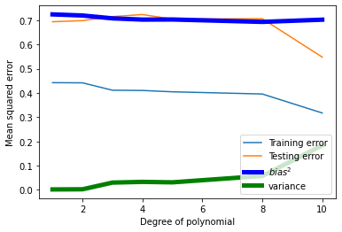

Bias-Variance Tradeoff#
Mahmood Amintoosi, Fall 2024
Computer Science Dept, Ferdowsi University of Mashhad
import numpy as np
from numpy import polyfit
from numpy import polyval
import matplotlib.pyplot as plt
from collections import defaultdict
def f(x):
return np.sin(x * np.pi)
def error_function(pred, actual):
return (pred - actual) ** 2
np.random.seed(120)
n_observations_per_dataset = 25
n_datasets = 1000
max_poly_degree = 12 # Maximum model complexity
model_poly_degrees = range(1, max_poly_degree + 1)
NOISE_STD = .5
percent_train = .8
n_train = int(np.ceil(n_observations_per_dataset * percent_train))
x = np.linspace(-1, 1, n_observations_per_dataset)
x = np.random.permutation(x)
x_train = x[:n_train]
x_test = x[n_train:]
theta_hat = defaultdict(list)
pred_train = defaultdict(list)
pred_test = defaultdict(list)
train_errors = defaultdict(list)
test_errors = defaultdict(list)
for dataset in range(n_datasets):
# Simulate training/testing targets
y_train = f(x_train) + NOISE_STD * np.random.randn(*x_train.shape)
y_test = f(x_test) + NOISE_STD * np.random.randn(*x_test.shape)
# Loop over model complexities
for degree in model_poly_degrees:
# Train model
tmp_theta_hat = polyfit(x_train, y_train, degree)
# Make predictions on train set
tmp_pred_train = polyval(tmp_theta_hat, x_train)
pred_train[degree].append(tmp_pred_train)
# Test predictions
tmp_pred_test = polyval(tmp_theta_hat, x_test)
pred_test[degree].append(tmp_pred_test)
# Mean Squared Error for train and test sets
train_errors[degree].append(np.mean(error_function(tmp_pred_train, y_train)))
test_errors[degree].append(np.mean(error_function(tmp_pred_test, y_test)))
def calculate_estimator_bias_squared(pred_test):
pred_test = np.array(pred_test)
average_model_prediction = pred_test.mean(0)
return np.mean((average_model_prediction - f(x_test)) ** 2)
def calculate_estimator_variance(pred_test):
pred_test = np.array(pred_test)
average_model_prediction = pred_test.mean(0)
return np.mean((pred_test - average_model_prediction) ** 2)
complexity_train_error = []
complexity_test_error = []
bias_squared = []
variance = []
for degree in model_poly_degrees:
complexity_train_error.append(np.mean(train_errors[degree]))
complexity_test_error.append(np.mean(test_errors[degree]))
bias_squared.append(calculate_estimator_bias_squared(pred_test[degree]))
variance.append(calculate_estimator_variance(pred_test[degree]))
best_model_degree = model_poly_degrees[np.argmin(complexity_test_error)]
plt.figure(figsize=(5, 3))
plt.plot(model_poly_degrees, bias_squared, color='blue', label='$bias^2$', linewidth=5)
plt.plot(model_poly_degrees, variance, color='green', label='variance', linewidth=5)
plt.plot(model_poly_degrees, np.array(bias_squared) + np.array(variance), linewidth=3, color='black', label='Total Error')
plt.axvline(best_model_degree, color='black', linestyle='--', linewidth=2, label=f'Optimal Model Complexity (Degree={best_model_degree})')
plt.xlabel('Model Complexity (Polynomial Degree)')
plt.ylabel('Error')
plt.ylim([0, .25])
plt.xlim([2, 4.5])
plt.legend()
plt.title('Bias-Variance Tradeoff')
Text(0.5, 1.0, 'Bias-Variance Tradeoff')

https://spotintelligence.com/2023/04/11/bias-variance-trade-off/
from sklearn.model_selection import train_test_split
from sklearn.preprocessing import PolynomialFeatures
from sklearn.linear_model import LinearRegression
from sklearn.metrics import mean_squared_error
import matplotlib.pyplot as plt
import numpy as np
# Generate some synthetic data with a non-linear relationship
np.random.seed(0)
x = np.linspace(-5, 5, num=100)
# y = x ** 3 + np.random.normal(size=100)
y = f(x) #np.sin(x * np.pi)
# Split the data into training and testing sets
x_train, x_test, y_train, y_test = train_test_split(x, y, test_size=0.2, random_state=0)
# Fit polynomial regression models with different degrees of polynomials
degrees = [1, 2, 3, 4, 5, 8, 10]
train_errors, test_errors = [], []
bias_squared = []
variance = []
for degree in degrees:
# Transform the features to polynomial features
poly_features = PolynomialFeatures(degree=degree)
x_poly_train = poly_features.fit_transform(x_train.reshape(-1, 1))
x_poly_test = poly_features.transform(x_test.reshape(-1, 1))
# Fit the linear regression model to the polynomial features
model = LinearRegression()
model.fit(x_poly_train, y_train)
# Evaluate the model on the training and testing data
y_pred_train = model.predict(x_poly_train)
y_pred_test = model.predict(x_poly_test)
train_error = mean_squared_error(y_train, y_pred_train)
test_error = mean_squared_error(y_test, y_pred_test)
train_errors.append(train_error)
test_errors.append(test_error)
bias_squared.append(calculate_estimator_bias_squared(y_pred_test))
variance.append(calculate_estimator_variance(y_pred_test))
# Plot the training and testing errors as a function of the degree of polynomial
plt.plot(degrees, train_errors, label='Training error')
plt.plot(degrees, test_errors, label='Testing error')
plt.plot(degrees, bias_squared, color='blue', label='$bias^2$', linewidth=5)
plt.plot(degrees, variance, color='green', label='variance', linewidth=5)
plt.legend()
plt.xlabel('Degree of polynomial')
plt.ylabel('Mean squared error')
plt.show()

test_error
0.6939637643352092